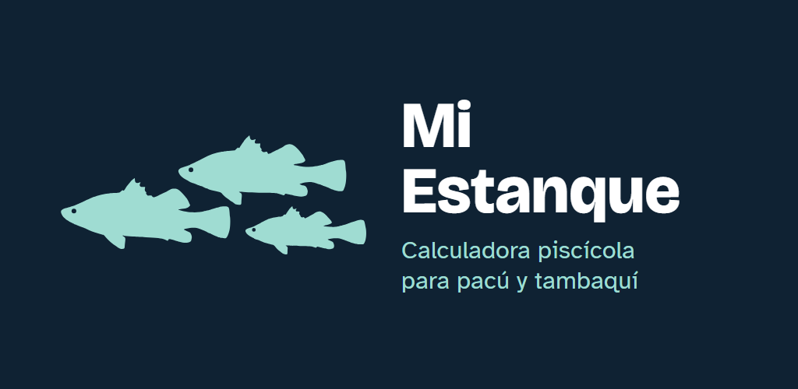
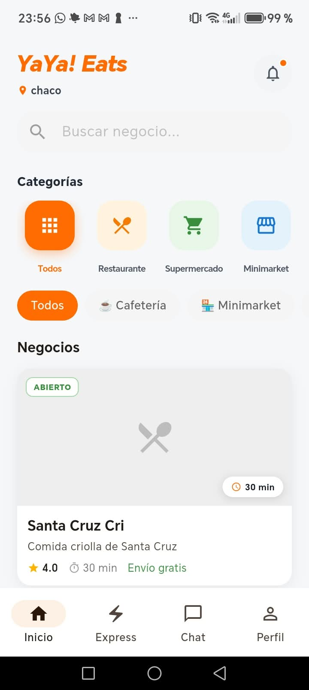
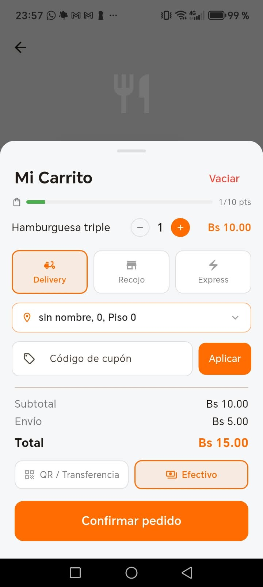
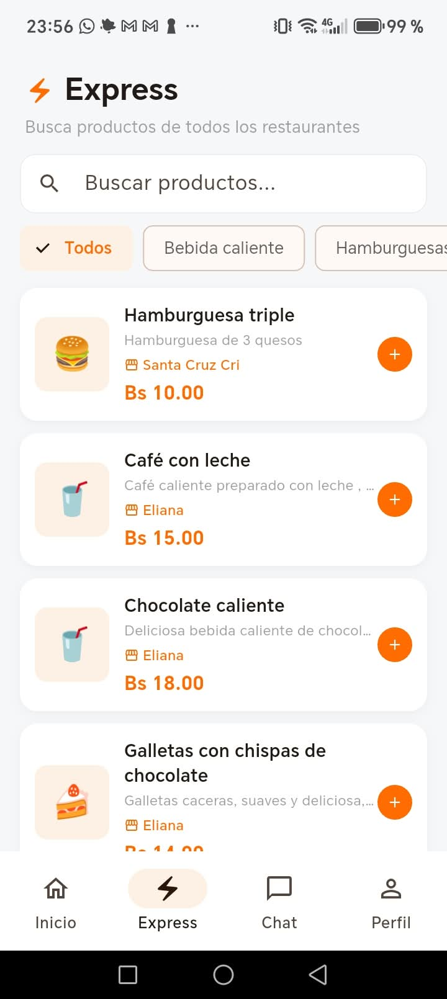

IBI Technology
IBI Technology

Mi Estanque
Con Pacu YachayLa calculadora piscícola para pacú y tambaquí. Registra la biometría y la app te dice cuánto alimento dar hoy, a qué hora y de qué tipo.
- Ración diaria
- Biometría
- FCA
- Sin internet
Software hecho en Bolivia
Hacemos apps sencillas y útiles para productores, emprendedores e instituciones. Pensadas para el campo, para el teléfono y para funcionar aunque no haya internet.





Herramientas para el trabajo de cada día: en el estanque, en la cocina y en la calle.

La calculadora piscícola para pacú y tambaquí. Registra la biometría y la app te dice cuánto alimento dar hoy, a qué hora y de qué tipo.
Delivery de comida y compras de restaurantes, supermercados y minimarkets. Pago con QR o efectivo, modo repartidor en la misma app y un panel web para que cada negocio administre sus pedidos.
Lotes por fecha de siembra, peso de la planta para saber cuándo inducir la floración y la fecha estimada de cosecha de cada lote.
Registra cada labor por lote (rastreo, siembra, fumigaciones), los agroquímicos aplicados y cuánto se gastó por hectárea.
¿Tienes una idea o una necesidad en tu trabajo? Cuéntanos.
Además de nuestras propias apps, trabajamos con personas, empresas e instituciones.
Diseño, programación y mantenimiento de aplicaciones y plataformas digitales.
Herramientas y asistencia técnica para la producción agropecuaria, piscícola y acuícola.
Te ayudamos a elegir, integrar y poner en marcha soluciones tecnológicas.
Cursos y talleres de tecnología e innovación productiva.
Somos un equipo chico, con trato directo.
Socio · Desarrollo de apps y tecnología
Socio · Alianzas, inversiones e investigación